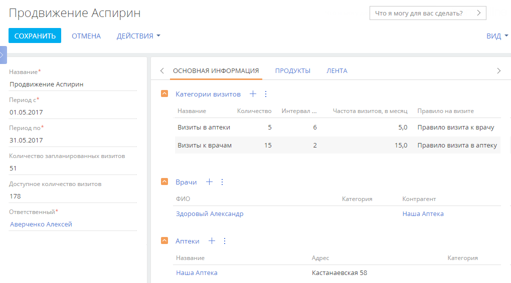
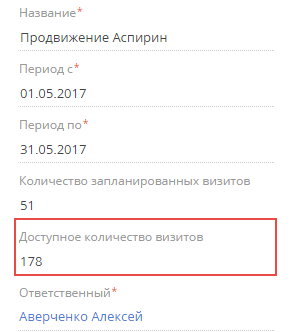
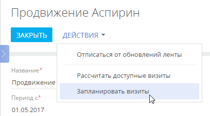
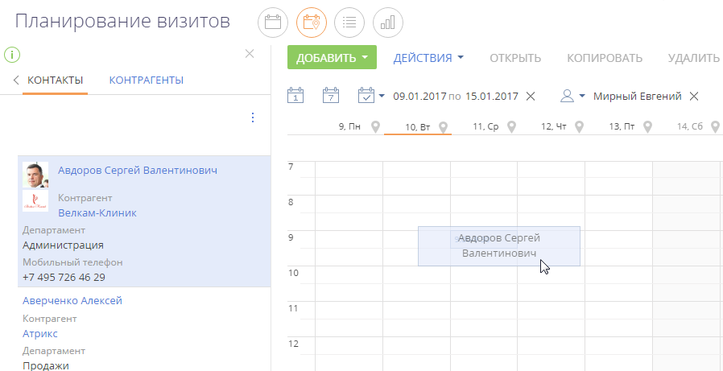
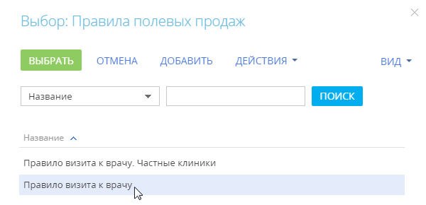

Планируйте визиты ваших медицинских представителей к врачам и в аптеки, прокладывайте на карте маршруты визитов, используя представление Планирование визитов раздела Активности.
Представление Планирование визитов включает следующие функциональные области:
-
Список контактов. Область отображает список врачей, к которым планируются визиты. Чтобы отобразить список контактов, ответственным по которым является определенный контакт, являющийся пользователем системы, укажите его ФИО в поле Сотрудник расписания. Записи в списке контактов можно отфильтровать с помощью команды Установить фильтр меню кнопки
 .
. -
Список контрагентов. Область отображает список аптек и лечебно-профилактических учреждений, в которые планируются визиты. Чтобы отобразить список контрагентов, ответственным по которым является определенный контакт, являющийся пользователем системы, укажите его ФИО в поле Сотрудник расписания. Вы можете отфильтровать записи в списке контрагентов при помощи команды Установить фильтр меню кнопки
. -
Расписание медицинского представителя. Расписание в представлении Планирование визитов аналогично стандартному расписанию пользователя. Дополнительно заголовки дней недели в расписании планирования содержат кнопки, по нажатию на которые на карте прокладывается дневной маршрут медицинского представителя.
-
Карта маршрута. Карта, на которой отображаются дневные маршруты медицинского представителя.
Запланировать визиты автоматически
Для автоматического планирования визитов медицинских представителей в аптеки и к врачам в Pharma Creatio предусмотрен раздел Цикловые задания. Цикловое задание — это активность, включающая несколько визитов в торговые точки в течение заданного периода времени. Такие активности создаются в разделе Цикловые задания. В рамках одного циклового задания можно запланировать ряд визитов на определенный период.
1. Добавить цикловое задание
-
Перейдите в раздел Цикловые задания.
-
Создайте новую запись по кнопке Добавить задание.
-
На открывшейся странице заполните обязательные поля. Укажите название циклового задания, период его выполнения, а также ответственного. Ответственным может быть контакт, для которого в системе создан пользователь.
-
На вкладке Основная информация:
-
Добавьте категорию визита. В колонке Название укажите категорию визита, который будет выполняться в рамках данного задания, например, визит в торговую точку.
-
В колонке Количество укажите общее количество визитов, которое вы хотите запланировать на выбранный период. При этом значения в колонках Интервал между визитами, дней и Частота визитов, в месяц будут рассчитаны автоматически.
-
В колонке Правило на визите выберите правило, в соответствии с которым будет выполняться визит. Колонка заполняется из справочника Правила полевых продаж.
-
На деталях Врачи и Аптеки укажите врачей и/или аптеки, визиты в которые будет выполнять медицинский представитель.
-
-
-
На вкладке Продукты укажите список продуктов, которые медицинский представитель будет продвигать через врачей и аптеки.
-
Сохраните созданное цикловое задание (Рис. 1).
Рис. 1 — Пример заполнения страницы циклового задания
2. Создать визиты по цикловому заданию
После добавления циклового задания перейдите к планированию визитов. Для этого:
-
Откройте созданное на предыдущем шаге цикловое задание и узнайте количество дополнительных визитов по действию Рассчитать доступные визиты на странице циклового задания. Полученное значение отобразится в поле Доступное количество визитов в профиле циклового задания (Рис. 2)
Рис. 2 — Доступное количество визитов -
После выполненного расчета в меню действий на странице циклового задания станет доступным действие Запланировать визиты (Рис. 3).
Рис. 3 — Действие Запланировать визиты -
По действию Запланировать визиты запустите процесс автоматического планирования визитов в соответствии с настроенными параметрами, а также с учетом календарей врачей и медицинских представителей. По окончании планирования вы получите уведомление о том, что визиты запланированы, а также об их количестве, которое отобразится в поле Количество запланированных визитов профиля циклового задания. Все созданные визиты отобразятся на детали Активности вкладки История страницы связанного контакта (врача) или контрагента (аптеки).
Как работает автоматическое планирование визитов
В ходе планирования визитов система выполняет следующие действия:
-
Определяет начальную точку, от которой происходит построение маршрутов. Такой точкой является местоположение медицинского представителя, ответственного за выполнение визита. Местоположение определяется по адресу, указанному на детали Адреса страницы контакта. Если на странице контакта адрес не указан, то используется адрес со страницы связанного с контактом контрагента.
-
Находит ближайшую к местоположению ответственного точку для выполнения визита. Выбирается оптимальный автомобильный маршрут в радиусе 200 км.
-
Выполняет проверку, работают ли в планируемое время ответственный и врач (или аптека).
-
Если рабочее время ответственного и врача/аптеки совпадает и попадает в планируемое время визита, то в системе создается первый визит.
Если же кто-то из участников визита в нужное время не работает, то система ищет следующую точку, ближайшую к местоположению ответственного. Далее планирование и создание визитов осуществляется по той же схеме.
Запланировать визиты вручную
Чтобы запланировать визит:
-
В разделе Активности перейдите в представление Планирование визитов (Рис. 4).
Рис. 4 — Переход в представление Планирование визитов
-
На открывшейся странице в области фильтров расписания выберите период планирования, а также сотрудника, визиты которого вы хотите запланировать.
- В списке контактов выберите контакт, визит к которому необходимо запланировать, и, удерживая левую клавишу мыши, перетащите его в область расписания на выбранный период времени (Рис. 5).
Рис. 5 — Добавление визита к врачу в расписание
Если для периода, в который входит добавляемый визит, настроено больше одного правила визита (к врачу, в аптеку), то дополнительно отобразится окно выбора правила, в соответствии с которым будет осуществляться визит (Рис. 6).
Рис. 6 — Выбор правила полевых продажВ результате в расписание будет добавлена новая активность с типом “Визит”. В визите будет указан выбранный контакт. Также в визит будет добавлен список действий, который настроен в справочнике Правила полевых продаж. Длительность визита будет соответствовать длительности, определенной в этом справочнике. При необходимости вы можете изменить длительность в расписании.
- Аналогичным образом запланируйте визит в аптеку, перетащив нужного контрагента из списка контрагентов в область расписания на выбранный период времени.
Созданный вручную визит будет автоматически связан с цикловым заданием при совпадении следующих параметров:
-
период планирования;
-
продвигаемый продукт;
-
врач и/или аптека.
При совпадении перечисленных параметров в поле Цикловое задание детали Связи вкладки Основная информация страницы планируемого вручную визита отобразится название связанного циклового задания.
Настроить персональный календарь
При планировании визитов учитываются выходные дни и интервалы рабочего времени, настроенные в календаре, по которому осуществляется планирование. Поэтому для корректного планирования дат и времени визитов необходимо настроить календари. По умолчанию в системе настроен один типовой календарь с такими характеристиками:
-
часовой пояс GMT 0, без перехода на зимнее и летнее время;
-
пятидневная рабочая неделя (с понедельника по пятницу);
-
восьмичасовой рабочий день (с 9:00 до 18:00), без обеденного перерыва;
-
сокращенные и праздничные дни отсутствуют.
Этот календарь указан в качестве базового в системной настройке “Базовый календарь” (код “BaseCalendar”). Вы можете изменить типовой календарь в соответствии с графиком работы вашей компании, или создать новый и внести его в системную настройку в качестве базового. Также вы можете создать дополнительные персональные календари, учитывающие график работы медицинских представителей и врачей, к которым планируются визиты. Для корректной работы календарей системная настройка “Базовый календарь” (код “BaseCalendar”) должна быть заполнена. К календарю, указанному в данной системной настройке, система обращается в том случае, если для контакта не настроен персональный календарь.
Чтобы создать новый календарь:
-
В меню Действия на странице контакта выберите команду “Календарь”.
-
Подтвердите необходимость создания персонального календаря, нажав кнопку Да.
Откроется страница настройки персонального календаря контакта. Поля Название и Часовой пояс будут заполнены автоматически. Поле Название является нередактируемым, а часовой пояс календаря при необходимости можно изменить. -
В поле Пользователь укажите представителя компании, который будет выполнять визиты к контакту, если хотите, чтобы при планировании визитов учитывалось и его рабочее время.
-
Перейдите к редактированию параметров рабочей недели. По умолчанию параметры недели соответствуют параметрам типового календаря. Укажите тип дня “Рабочий” для всех дней с понедельника по пятницу, “Сокращенный” для субботы и “Выходной” для воскресенья.
-
Настройте рабочее время. Укажите обеденный перерыв, задав рабочее время в виде двух интервалов, до и после перерыва: 9:00 – 13:00 и 14:00 – 18:00.
-
На вкладке Праздничные и сокращенные дни добавьте даты дополнительных выходных дней или рабочих дней с особым графиком работы.
Проложить маршрут медицинского представителя
Использование карты при планировании визитов позволит построить маршрут, предусматривающий минимальные затраты времени на перемещение по городу.
Торговая точка отображается на карте маршрута в соответствии с GPS-координатами адреса, указанного на странице контрагента. По умолчанию для построения маршрута в аптеку (к контрагенту) используется адрес, который был добавлен последним на странице контрагента.
В случае визита к врачу (контакту) для прокладывания маршрута используется последний добавленный адрес его контрагента. Адрес указывается на детали Адреса вкладки Основная информация страницы контакта.
После того как в расписание были добавлены визиты, проложите маршрут на карте.
Для отображения на карте маршрутов за один день нажмите кнопку построения маршрута , которая находится в заголовке дня недели в расписании (Рис. 8).
В результате на карте отобразится маршрут с учетом всех визитов, добавленных в расписание на выбранный день. Очередность визитов на карте будет соответствовать их очередности в расписании. Кнопка  в заголовке дня недели изменит свой цвет. Цвет кнопки будет соответствовать цвету маршрута на карте. Цвет маршрута для разных дней различается.
в заголовке дня недели изменит свой цвет. Цвет кнопки будет соответствовать цвету маршрута на карте. Цвет маршрута для разных дней различается.
Чтобы отобразить на карте маршруты нескольких дней, выделите кнопки  необходимых дней.
необходимых дней.